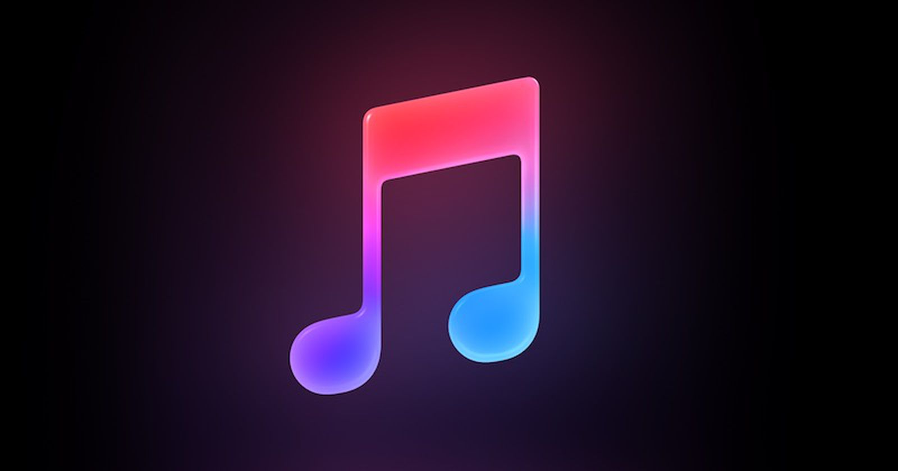

Создайте квадрат красного цвета с размерами 300х300px Сделайте так, чтобы при наведении курсора на квадрат он менял размеры (ширина 200px, высота 400px), менял цвет на желтый и плавно разворачивался на 90 градусов по часовой стрелке.